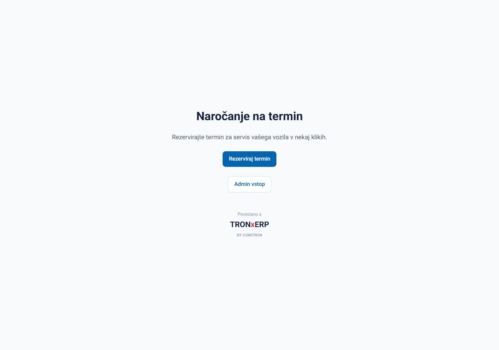
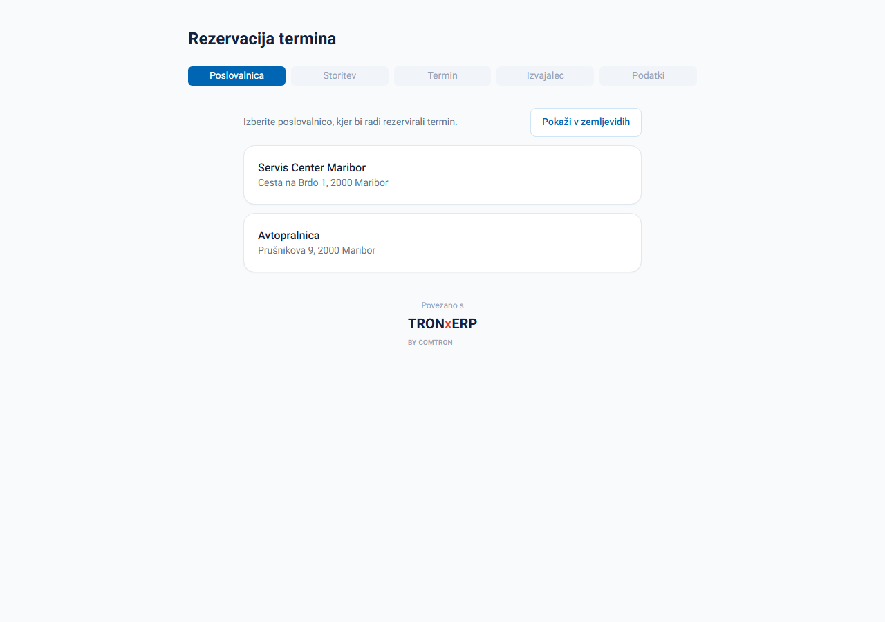
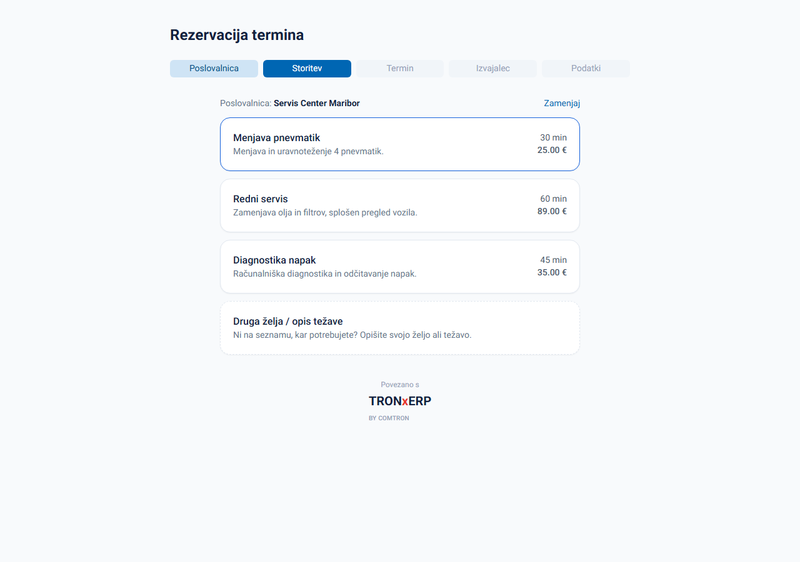
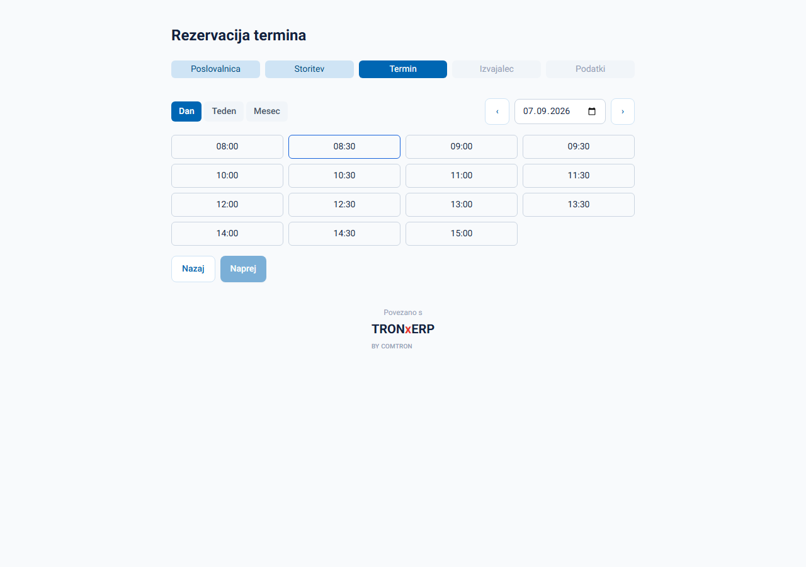
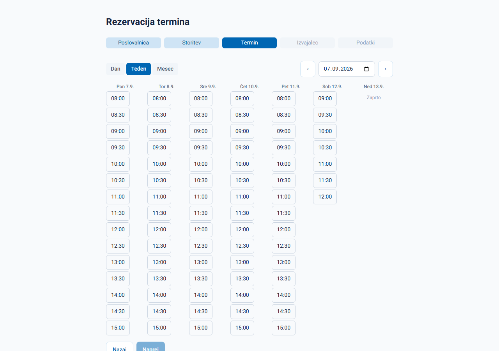
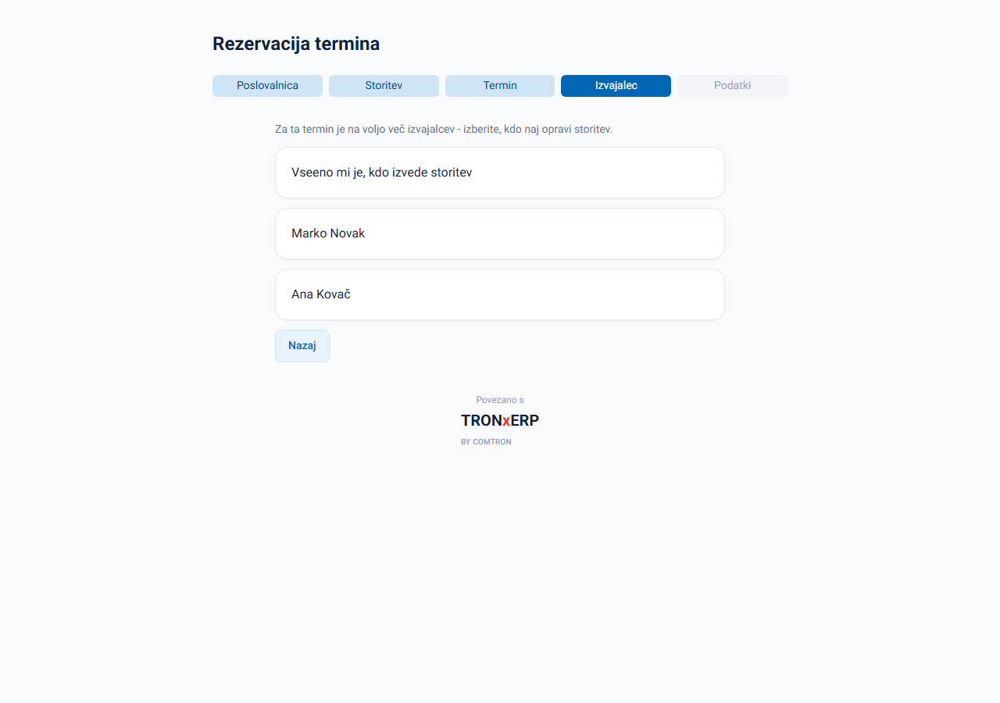
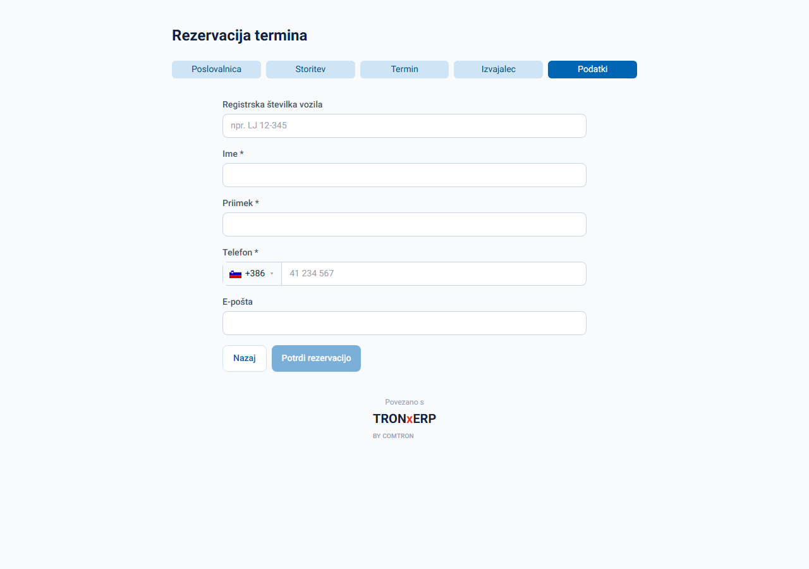
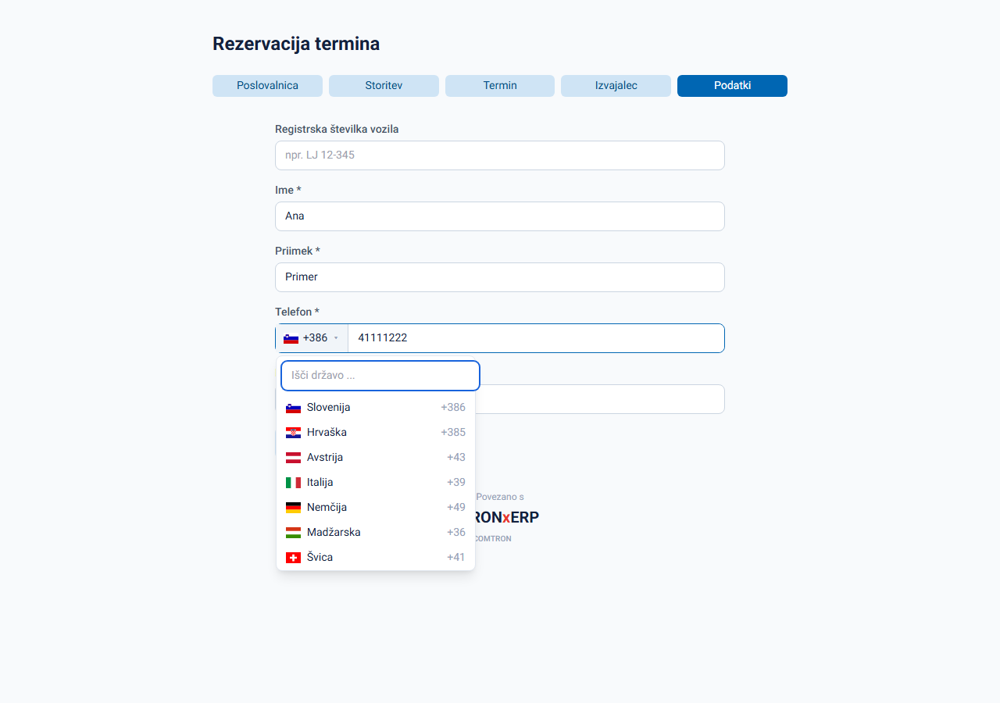
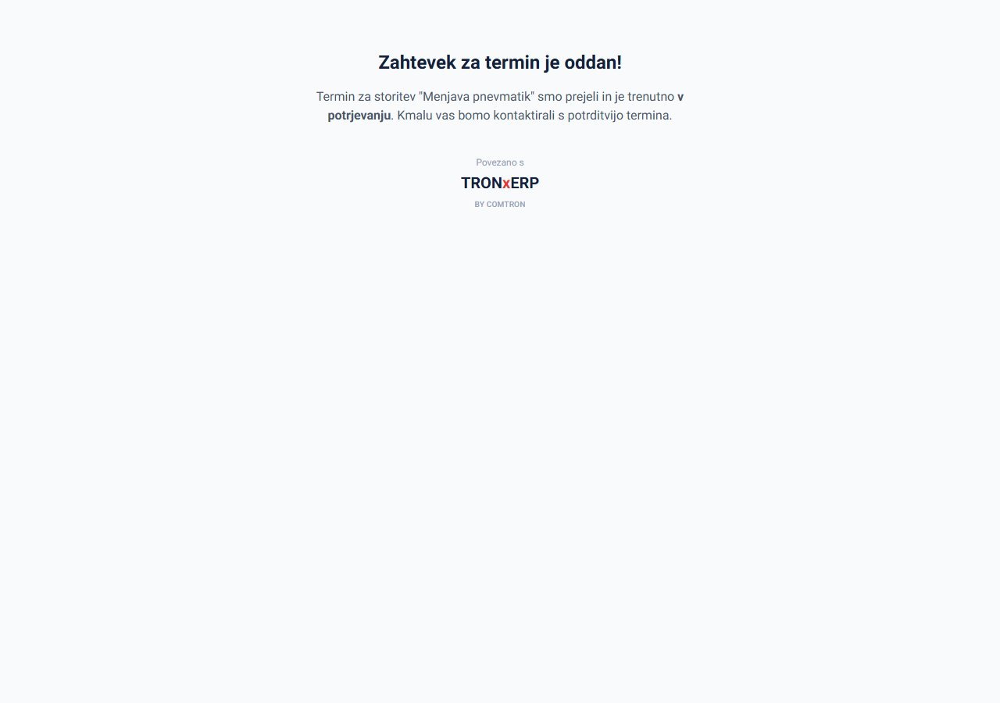

1 Kaj je ta aplikacija
Spletni obrazec, prek katerega se stranka sama naroči na termin servisa — brez klicanja.
Stranka v nekaj korakih izbere storitev, si ogleda proste termine in odda zahtevek. Rezervacija po oddaji čaka na potrditev osebja (glej razdelek 8) — šele takrat je termin dokončno rezerviran.

2 Izbira poslovalnice
Ta korak se prikaže SAMO, če podjetje posluje na več kot eni lokaciji.
- Če je aktivna samo ena poslovalnica, se ta korak samodejno preskoči in obrazec se začne kar pri izbiri storitve.
- Če je poslovalnic več, izberete eno s klikom na seznam, ali kliknete »Pokaži v zemljevidih«, da vidite vse poslovalnice na zemljevidu in izberete tisto, ki vam je najbližje.

3 Izbira storitve
Seznam storitev, ki jih izbrana poslovalnica ponuja, z okvirnim trajanjem in ceno.
- Kliknite na želeno storitev (npr. Menjava pnevmatik) — ob vsaki je prikazano trajanje in cena.
- Če iskane storitve ni na seznamu, kliknite kartico »Druga želja / opis težave« — na koncu obrazca boste lahko z besedami opisali, kaj potrebujete.

4 Izbira termina
Koledar, kjer izberete natančen dan in uro.
- Preklapljate lahko med pogledom Dan, Teden in Mesec (zgoraj levo).
- Puščici ‹ › in polje z datumom premikata prikazano obdobje.
- Zasedeni termini so obarvani sivo in jih ni mogoče izbrati — prikazani so, da vidite, kdaj je še prosto, brez razkritja podatkov drugih strank.
- Če z miško obstanete nad prostim terminom, se prikaže oblaček s številom še prostih mest (npr. »Še 2 prosti mesti«) — to je pomembno, kadar je za isto uro na voljo več izvajalcev ali več fizičnih delovnih mest (npr. dvižnih ramp).
- Kliknite na prost termin in nato »Naprej«.


5 Izbira izvajalca
Ta korak se prikaže SAMO, če je za izbrani termin dejansko prostih več izvajalcev.
- Če je za ta termin prost samo en izvajalec (ali gre za »Drugo željo«), se ta korak samodejno preskoči — izvajalec je dodeljen samodejno.
- Če je prostih izvajalcev več, lahko izberete določenega, ali kliknete »Vseeno mi je, kdo izvede storitev«.

6 Vnos podatkov
Zadnji korak pred oddajo — kontaktni podatki, po potrebi tudi registrska številka vozila.
| Polje | Obvezno | Opomba |
|---|---|---|
| Registrska številka vozila | Ne | Prikaže se samo, če je dejavnost nastavljena na »Avtoservis«. |
| Ime | Da | — |
| Priimek | Da | — |
| Telefon | Da | Glej razdelek 7 — izbira države + številka. |
| E-pošta | Ne | Če jo vnesete, mora biti v veljavni obliki (npr. ime@ponudnik.si) — sistem to preveri. |

7 Telefonska številka in klicna koda države
Telefonsko številko vnesete v dveh delih: klicna koda države (z zastavico) + sama številka.
- Klikom na polje s klicno kodo (npr. 🇸🇮 +386) se odpre iskalni seznam vseh držav.
- Vpišite del imena države (npr. »hrva«) ali del klicne kode, da seznam zožite, nato kliknite želeno državo.
- Privzeto je izbrana država, v kateri posluje izbrana poslovalnica (Slovenija ali Hrvaška).
- V desno polje vnesite samo številko, brez klicne kode in presledkov ni treba dodajati posebej — le števke.

8 Oddaja in kaj sledi
Po kliku na »Potrdi rezervacijo« zahtevek še ni dokončno rezerviran termin.
Osebje v administraciji (glej drugi del teh navodil) zahtevek potrdi ali zavrne. Stranka o končni potrditvi trenutno ni obveščena avtomatsko (e-poštna/SMS obvestila niso del te različice) — po potrebi jo pokličite/kontaktirajte.
